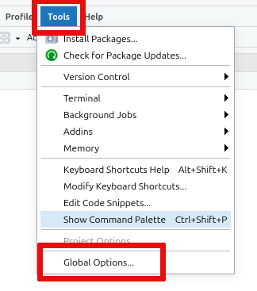
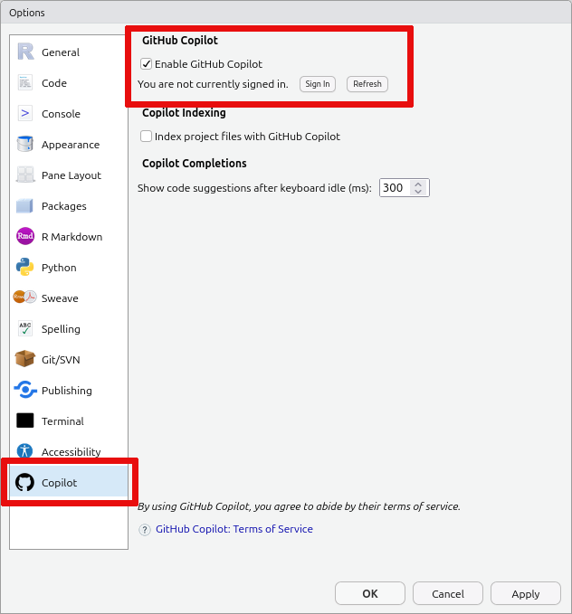

RStudio¶
This page describes how to access the RStudio servers available to users of Esrum. For general tips on using R, see the Using R on Esrum page.
- The Rstudio servers can be found at
To access the RStudio servers, you must have applied for access as described on the Applying for access page, and you must be connected via the UCPH VPN. Once connected, use the short form of your UCPH username to log in:

If you have not been granted access, or if you are not connected via the
VPN, then you will likely see a browser error message like This site
can't be reached. See Connecting to the cluster for more information.
Warning
The RStudio servers are only for running R. If you need to run other tasks then you must connect to the head node and run them using Slurm as described in Running jobs using Slurm.
Resource intensive tasks running on the RStudio server will likely negatively impact everyone using the service, and we may therefore terminate such tasks without warning if we deem it necessary.
RStudio server best practice¶
Since the RStudio server is a shared resource where that many users may be using simultaneously, we ask that you show consideration towards other users of the server.
In particular,
Try to limit the size of the data-sets you work with on the RStudio server. Since all data has to be read from (or written to) network drives, one person reading or writing a large amount of data can cause significant slow-downs for everyone using the service.
We therefore recommend that you load a (small) subset of your data in RStudio, that you use that subset of data to develop your analyses processes, and that you use that to process your complete dataset via an R-script submitted to Slurm as described in Running jobs using Slurm.
See the Using R on Esrum page for additional guidance on how to use R with Slurm.
Don't keep data in memory that you do not need. Data that you no longer need can be freed with the
rmfunction or using the broom icon on theEnvironmenttab in RStudio. This also helps prevent RStudio from filling your home folder when your session is closed (see Troubleshooting below).Do not run resource intensive tasks via the embedded terminal. As noted above, such tasks will be terminated without warning if deemed to have a negative impact on other users. Instead, such tasks should be run using Slurm as described in Running jobs using Slurm.
Preserving loaded data¶
Data that you have loaded into R and other variables you have defined
are visible on the Environment tab in RStudio along with the amount
of memory used (here 143 MiB):

By default, this data will be saved to your RStudio folder on the
/scratch drive when you quit your session or when it automatically
suspends after 9 hours of inactivity. This may, however, result in very
large amounts of data being saved to disk and, consequently, large of
amounts of data having to be read when you log in again, resulting in
logging in taking a very long time.
For this reason we recommend disabling the saving and loading of
.RData in the Global Settings accessible via the Tools Menu
as shown:

This ensures that you always start with a fresh session and that you therefore are able to log in quickly to the RStudio server.
It is also recommended that the Always save history (even when not
saving .RData) option is enabled, as the commands you type into the R
terminal will otherwise not be saved.
Use of GitHub Copilot¶
You can make use of GitHub Copilot in RStudio, provided that you have a valid license. Please refer to the guidelines on use of generative AI and LLMs before doing so.
To enable Copilot, click on the
Toolsmenu and selectGlobal Options:Open the
Copilottab and tick theEnable Github Copilotcheckbox. Then click theSign Inbutton:Finally, copy the verification code you are shown, click on the displayed link, and follow the instructions on Github.
Troubleshooting¶
Incorrect or invalid username/password¶
Please make sure that you are entering your username in the short form
(i.e. abc123) and that you have applied for and been given access to
the Esrum HPC (see Applying for access). If the problem
persists, please Contact us us for assistance.
Logging in takes a very long time¶
Similar to regular R, RStudio will automatically save the data you have loaded into your R session and will restore it when you return later, so that you can continue your work. However, this many result in large amounts of data being saved and loading this data may result in a large delay when you attempt to log in at a later date.
It is therefore recommended that you regularly clean up your workspace using the built-in tools, when you no longer need to have the data loaded in R.
You can remove individual bits of data using the rm function in R.
This works both when using regular R and when using RStudio. The
following gives two examples of using the rm function, one removing
a single variable and the other removing all variables in the current
session:
1# 1. Remove the variable `my_variable`
2rm(my_variable)
3
4# 2. Remove all variables from your R session
5rm(list = ls())
Alternatively you can remove all data saved in your R session using the
broom icon on the Environment tab:


If you wish to prevent this issue in the first case, then you can also
turn off saving the data in your session on exit and/or turn off loading
the saved data on startup. This is accomplished via the Global
Options... accessible from the Tools menu:

Should your R session have grown to such a size that you simply cannot log in and clean it up, then it may be necessary to remove the files containing the data that R/RStudio has saved. This data is stored in two locations:
In the
.RDatafile in your home (~/.RData). This is where R saves your data if you answer yesSave workspace image? [y/n/c]when quitting R.In the
environmentfile in your RStudio session folder (~/.local/share/rstudio/sessions/active/session-*/suspended-session-data/environment). This is where RStudio saves your data should your login time out while using RStudio.
Please Contact us us if you need help removing the correct files.
libstdc++.so.6: version 'GLIBCXX_3.4.26' not found¶
See the troubleshooting section on the Using R on Esrum page.